牙科人工智能基准
OmniDentBench
跨专科、跨语言、结合临床图像，评估 AI 的牙科推理能力。
由牙科临床医师与研究人员共同建设。公开版本包含评测题目、评分量表和可复现的评测工具。
- 1,178
- 道评测题目
- 1,099
- 道带图题目
- 12
- 个牙科专科
- 8
- 种语言
合作机构
 香港中文大学（深圳）
香港中文大学（深圳） 香港大学牙医学院
香港大学牙医学院- 深圳自由动脉科技有限公司
- 北京大学
 北大清华生命科学联合中心
北大清华生命科学联合中心- 北京大学国家生物医学成像科学中心
 菲腊牙科医院
菲腊牙科医院 美国梅奥诊所
美国梅奥诊所- 德国慕尼黑大学医院
查看另外 7 家合作机构
 马来西亚世纪大学
马来西亚世纪大学 非洲尼日利亚阿布贾国家医院
非洲尼日利亚阿布贾国家医院 拉各斯大学医学院
拉各斯大学医学院- 巴耶罗大学
 索科托乌斯马努·丹佛迪约大学
索科托乌斯马努·丹佛迪约大学 迈杜古里大学
迈杜古里大学 非洲埃塞俄比亚马达瓦拉布大学
非洲埃塞俄比亚马达瓦拉布大学
项目团队
指导委员会主席
 王俊文
王俊文 金作林
金作林 王本友
王本友
指导委员会成员 (8)
 陈良怡
陈良怡 林宇恒
林宇恒- 喬威
- John Adeoye
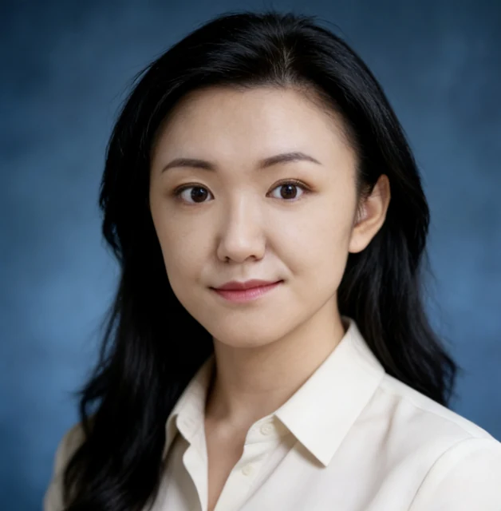
單知一- 楊偉發
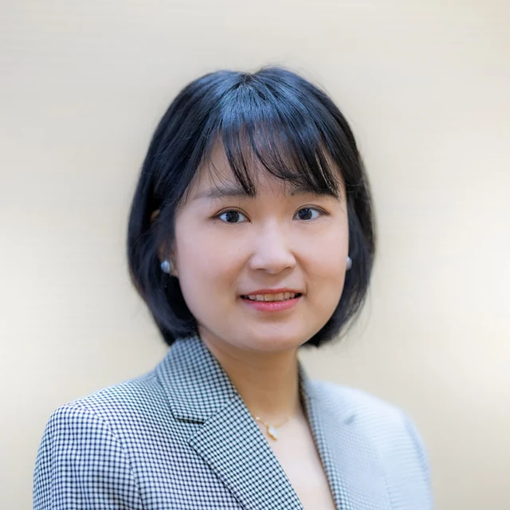
李新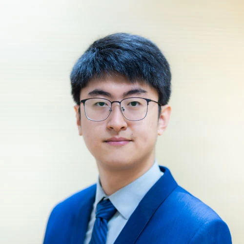
唐中元
指导委员会学生成员 (5)
 赵俊杰
赵俊杰 盛孜莹
盛孜莹 游佳君
游佳君- 蔡镇阳
 苏周
苏周
专科委员会主席 (12)
- 钟鸣
 刘大勇
刘大勇- 张惠
 徐明明
徐明明- 刘青
 蔡伟华
蔡伟华- 王小竞
- 马艳宁
- 江山
 王凤
王凤 亓坤
亓坤- 方彦成
专科委员会成员 (46)
 刘冰
刘冰 李大桁
李大桁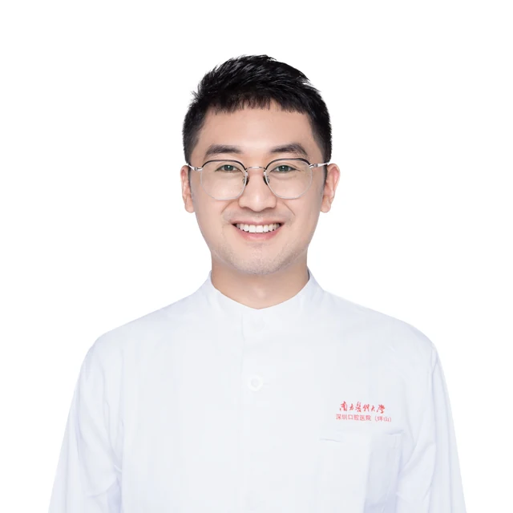
王侗飞- 周芳洁
 刘芬
刘芬 Forest Cheng
Forest Cheng 康芙嘉
康芙嘉- 郝春秀
- 赵家敏
 张佳明
张佳明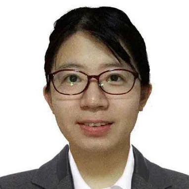
刘荩文 陈金妍
陈金妍 王珺婷
王珺婷 杨宽
杨宽 石磊
石磊 赵琳
赵琳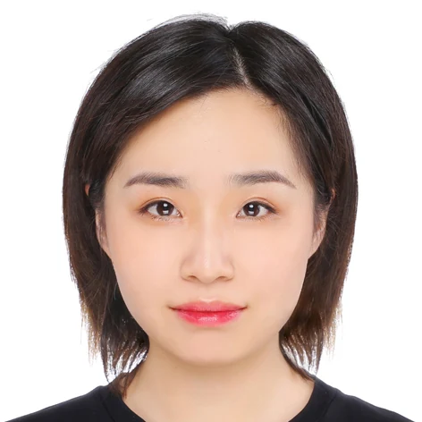
MAO Yilin- 李梦红
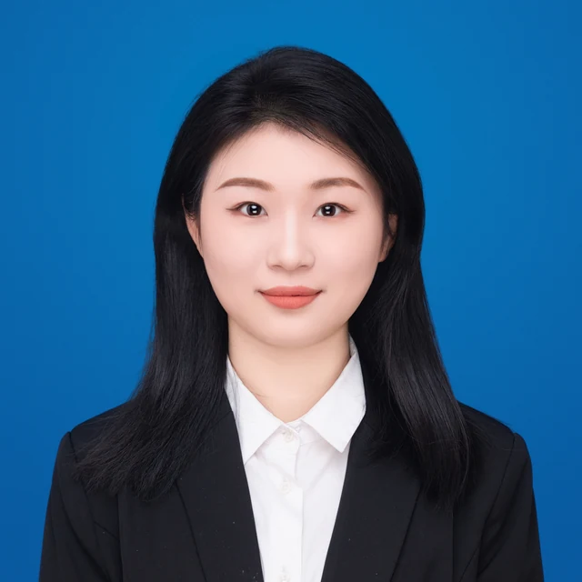
宋萌萌 黄敏
黄敏 卫明慧
卫明慧- 张明欣
 Patricia Ho
Patricia Ho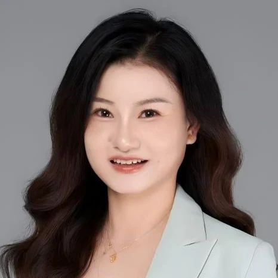
王沛娟 陈鹏
陈鹏 芦睿
芦睿 孙仕铎
孙仕铎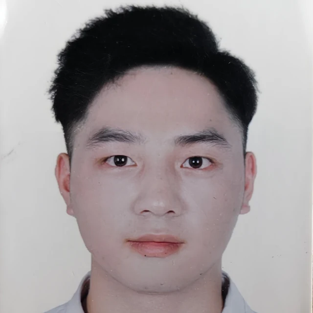
何世荣 张仕鑫
张仕鑫 黄舒蔚
黄舒蔚 邱思齐
邱思齐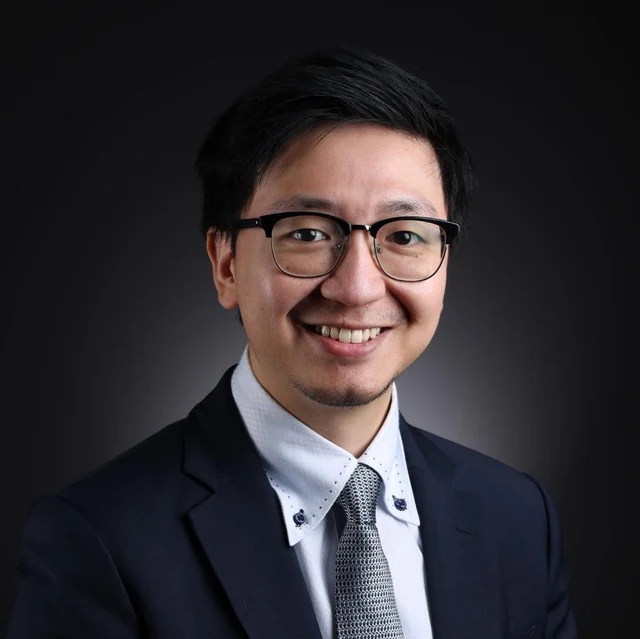
Tai Pak Chuen Patrick Wu Songying
Wu Songying- XU Leyao
- 金相杰
- 乔雪
- 蒋旸
- 张亚秋
 Yefeng Wu
Yefeng Wu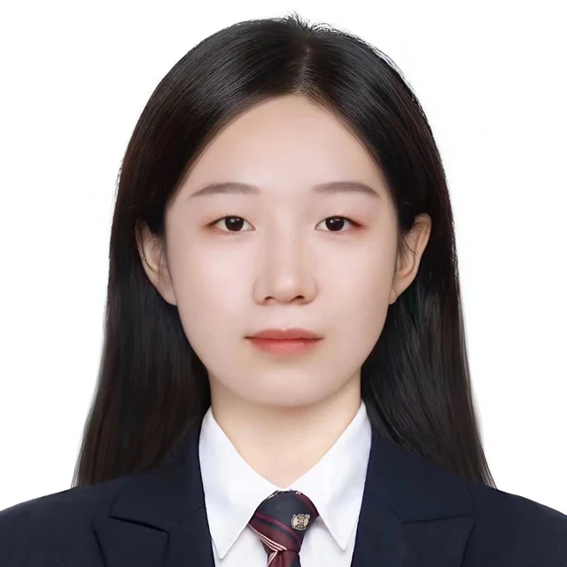
郭一丹 郑依凡
郑依凡 王莹
王莹 吴宇佳
吴宇佳 朱振来
朱振来 邓志强
邓志强 李卓盈
李卓盈